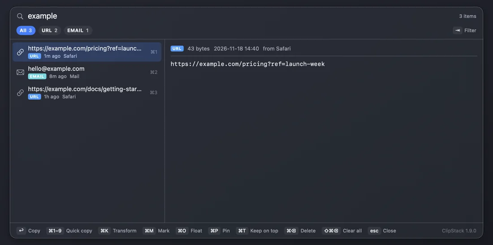
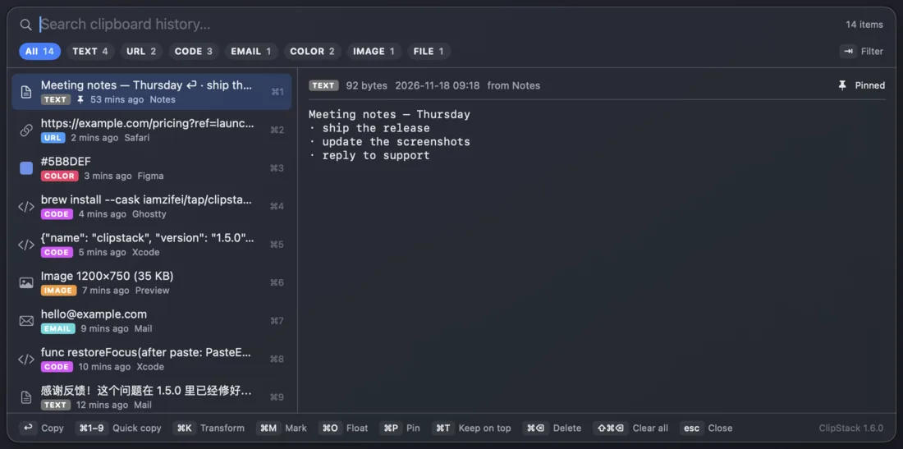
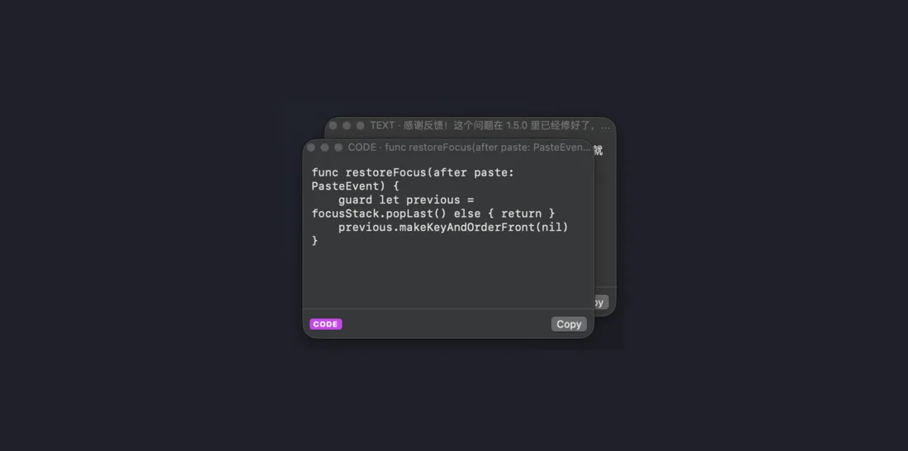

Free clipboard manager for Mac
Everything you copy, kept.
Your Mac's clipboard only remembers the last thing you copied. ClipStack remembers the rest — text, links, images and files. Press ⇧⌘V in any app, find the one you need, press ↩, paste.
Free · Open source (MIT) · macOS 13+ · Apple silicon
A real screen recording at normal speed. The history is demo data.
01 · What it is
One clipboard slot is not enough.
Copy a link, then copy an email address, and the link is gone. ClipStack is a small app in your menu bar that saves every copy as it happens, so nothing you copied is ever lost — and any of it is one shortcut away.
Each copy overwrites the last. To get the link back you go find it and copy it again.
Every copy is kept, newest first, tagged by type. Pick any of them and it goes back on the clipboard.
02 · Why it helps
Stop copying the same thing twice.
Nothing you copy gets lost
The last 300 copies are kept by default — text with its formatting, images and files from Finder. Pinned entries never age out.
Found in seconds, from any app
⇧⌘V opens the history over whatever you're doing. Type a few letters to search, or press Tab to show just links, code or images.
Stays on your Mac
No account, no sync, no analytics. Passwords that your password manager marks as private are never saved.
03 · How to use it
Three keys. That's the whole app.
Download, drag ClipStack to Applications, open it. It lives in the menu bar — no Dock icon, no window to manage. Then:
Copy, as you always do.
Nothing new to learn. Every time you copy, ClipStack saves it quietly in the background.
Press ⇧⌘V to see everything.
The panel opens over the app you're in, newest first. Use ↑ ↓ or just type to search — the right side shows the whole entry.
Press ↩, then paste.
The entry goes back on your clipboard, with its original formatting. Turn on “Paste into the previous app after choosing” in Settings and ↩ pastes it for you.
For the keyboard-only crowd
Hold ⇧⌘. Tap V. Let go.
Like ⌘Tab, but for your clipboard. Keep ⇧⌘ held and tap V again to step back through history; release to paste the highlighted entry. A single press still just opens the panel.
The history appears on the newest entry, while the app you're typing in keeps focus.
Each tap steps one entry back. ← → move either way, ⌫ deletes, esc cancels.
The highlighted entry is pasted straight into your app. No clicks, no extra ⌘V.
Optional, off by default · Turn on in Settings → Pasting · Needs macOS Accessibility permission · Pick any combo you like
04 · Beyond the basics
Small moves that add up.
Everything happens inside the same panel, from the keyboard. These are all in the app today.
Every entry is tagged.
URL, EMAIL, CODE, COLOR, TEXT, IMAGE, FILE — so you can spot the right one at a glance. Press Tab to show one type at a time; colours get a swatch and HEX, RGB and HSL.

Type to find it.
The search field is ready the moment the panel opens. Input methods such as Chinese pinyin work too.

Change it before you paste.
⌘K opens transforms for the selected entry: change case, trim, join lines, format or minify JSON, URL-encode, convert a colour, pull the text out of a screenshot (on-device OCR), copy file paths. The result is saved as a new entry.

Merge several into one paste.
Mark entries with ⌘M (or ⌘-click), then press ↩: they're copied as one, joined by new lines, in the order you marked them.

Pin what you reuse.
⌘P keeps an entry at the top of the list for good — your address, a canned reply, a command you run every day. Pinned entries never age out.

Float it next to your work.
⌘O pops any entry out as a small always-on-top note you can drag anywhere. Or press ⌘T and the whole panel stays on top while you type in another app.

Images and files, too.
Screenshots and copied images get a full preview; files copied in Finder come back as files. Rich text pastes back as rich text.

05 · Cheat sheet
Every key, on one page.
06 · Privacy
Your clipboard stays yours.
Nothing leaves your Mac
History is a plain folder in your Library. No account, no sync, no analytics — the only network request is the update check.
Secrets are skipped
Anything a password manager marks as concealed or transient is never recorded (the nspasteboard.org convention).
None, out of the box
ClipStack asks for nothing to do its job. Only the two optional paste helpers use Accessibility, and only once you switch one on.
07 · Questions
Everything you might ask.
01What exactly is ClipStack?
A clipboard manager for macOS. It sits in the menu bar and saves everything you copy — text, links, code, images, files — so you can bring any of it back later with ⇧⌘V instead of finding and copying it again.
02Is it really free?
Yes. ClipStack is free and open source under the MIT licence, with no subscription and no paid tier. If it saves you time, there's an optional Ko-fi tip jar.
03How do I install it?
Download the DMG from the releases page, drag ClipStack to Applications and open it. A short welcome guide shows the keys the first time. After that, ClipStack checks for updates and installs them from inside the app.
04Which Macs does it run on?
macOS 13 Ventura or later, on Apple silicon (M-series) Macs.
05Is my clipboard data private?
Everything stays on your Mac, in ~/Library/Application Support/ClipStack. Nothing is uploaded, and entries a password manager marks as concealed are never saved. You can delete one entry with ⌘⌫ or clear everything from the menu-bar menu.
06Does it need any permissions?
Not to work. Two optional settings — paste straight into the app you came from, and hold ⇧⌘ to cycle — need macOS Accessibility, and macOS only asks when you turn one on.
07Can I change the shortcuts?
Yes. In Settings, click any shortcut — open the panel, open Settings, clear history, or the hold-to-cycle combo — and press the new keys.
08What languages does it speak?
English, 简体中文, 繁體中文, 日本語, 한국어, Español, Français and Deutsch. It follows your Mac's language, or pick one in Settings.
More free Mac apps from the same maker
Copy once. Paste forever.
Free forever · No subscription · No account